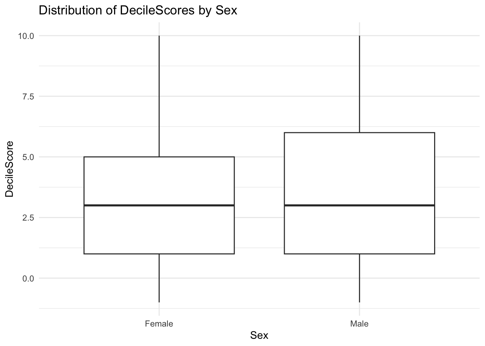

library(tidyverse)── Attaching core tidyverse packages ──────────────────────── tidyverse 2.0.0 ──
✔ dplyr 1.1.4 ✔ readr 2.1.5
✔ forcats 1.0.0 ✔ stringr 1.5.1
✔ ggplot2 3.5.0 ✔ tibble 3.2.1
✔ lubridate 1.9.3 ✔ tidyr 1.3.1
✔ purrr 1.0.2
── Conflicts ────────────────────────────────────────── tidyverse_conflicts() ──
✖ dplyr::filter() masks stats::filter()
✖ dplyr::lag() masks stats::lag()
ℹ Use the conflicted package (<http://conflicted.r-lib.org/>) to force all conflicts to become errorslibrary(MASS)
Attaching package: 'MASS'
The following object is masked from 'package:dplyr':
selectcompas_scores_clean <- read_csv("dataset/compas-scores-clean.csv")Rows: 60843 Columns: 8
── Column specification ────────────────────────────────────────────────────────
Delimiter: ","
chr (3): Sex, Race, ScoreText
dbl (4): Person_ID, Age, RawScore, DecileScore
date (1): DateOfBirth
ℹ Use `spec()` to retrieve the full column specification for this data.
ℹ Specify the column types or set `show_col_types = FALSE` to quiet this message.model <- polr(as.factor(DecileScore) ~ Sex, data = compas_scores_clean, Hess=TRUE)
modelCall:
polr(formula = as.factor(DecileScore) ~ Sex, data = compas_scores_clean,
Hess = TRUE)
Coefficients:
SexMale
0.2398502
Intercepts:
-1|1 1|2 2|3 3|4 4|5 5|6
-7.026391496 -0.642503205 0.006575047 0.570739527 0.953044932 1.351940665
6|7 7|8 8|9 9|10
1.796170065 2.259116253 2.838405220 3.778964772
Residual Deviance: 249899.29
AIC: 249921.29 summary(model)Call:
polr(formula = as.factor(DecileScore) ~ Sex, data = compas_scores_clean,
Hess = TRUE)
Coefficients:
Value Std. Error t value
SexMale 0.2399 0.01725 13.9
Intercepts:
Value Std. Error t value
-1|1 -7.0264 0.1497 -46.9228
1|2 -0.6425 0.0159 -40.3333
2|3 0.0066 0.0157 0.4198
3|4 0.5707 0.0158 36.1351
4|5 0.9530 0.0161 59.2291
5|6 1.3519 0.0166 81.3858
6|7 1.7962 0.0175 102.7372
7|8 2.2591 0.0188 119.9679
8|9 2.8384 0.0214 132.7291
9|10 3.7790 0.0286 131.9669
Residual Deviance: 249899.29
AIC: 249921.29 predictions <- predict(model, compas_scores_clean, type="class")
ggplot(compas_scores_clean, aes(x=Sex, y=DecileScore)) +
geom_boxplot() +
labs(title="Distribution of DecileScores by Sex",
x="Sex",
y="DecileScore") +
theme_minimal()